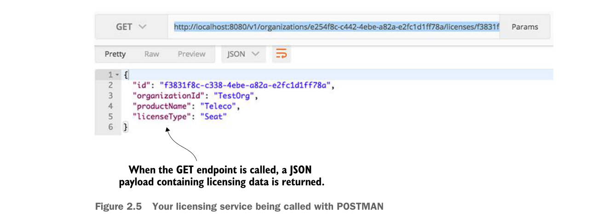

Sau khi dịch vụ được khởi động, bạn có thể gọi trực tiếp endpoint được phơi bày. Vì phương thức đầu tiên bạn phơi bày là lời gọi GET, bạn có thể dùng nhiều cách để gọi dịch vụ. Cách tôi ưa thích là dùng công cụ trên trình duyệt Chrome như POSTMAN hoặc CURL để gọi dịch vụ. Hình 2.5 minh họa một lời gọi GET thực hiện trên endpoint http://localhost:8080/v1/organizations/e254f8c-c442-4ebe-a82a-e2fc1d1ff78a/licenses/f3831f8c-c338-4ebe-a82a-e2fc1d1ff78a.

Dịch vụ cấp phép của bạn được gọi bằng POSTMAN
Tại thời điểm này, bạn đã có một khung xương dịch vụ đang chạy. Nhưng từ góc nhìn phát triển, dịch vụ này chưa hoàn chỉnh. Một thiết kế microservice tốt không bỏ qua việc tách dịch vụ thành các lớp logic nghiệp vụ và truy cập dữ liệu được định nghĩa rõ ràng. Khi tiến tới các chương sau, bạn sẽ tiếp tục lặp lại trên dịch vụ này và đi sâu hơn vào cách cấu trúc nó.
Hãy chuyển sang góc nhìn cuối cùng: khám phá cách một kỹ sư DevOps vận hành hóa dịch vụ và đóng gói nó để triển khai lên đám mây.
2.4 Câu chuyện DevOps: xây dựng cho những thử thách của runtime
Đối với kỹ sư DevOps, thiết kế microservice xoay quanh việc quản lý dịch vụ sau khi nó đưa vào production. Viết code thường là phần dễ. Giữ cho nó chạy mới là phần khó.
Mặc dù DevOps là một lĩnh vực CNTT phong phú và đang phát triển, bạn sẽ bắt đầu nỗ lực phát triển microservice với bốn nguyên tắc và xây dựng dựa trên các nguyên tắc này ở các chương sau trong cuốn sách. Các nguyên tắc này là
- Một microservice nên tự chứa và có thể triển khai độc lập, với nhiều instance của dịch vụ được khởi động và dừng lại bằng một artifact phần mềm duy nhất.
- Một microservice nên có thể cấu hình. Khi một instance dịch vụ khởi động, nó nên đọc dữ liệu cần thiết để tự cấu hình từ một vị trí trung tâm hoặc có